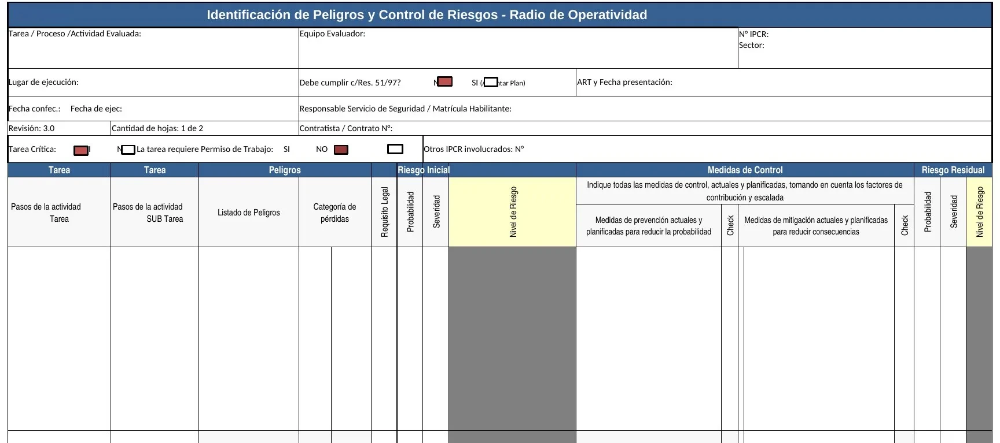

Cómo identificar peligros y controlar riesgos con la planilla, paso a paso: qué se completa, con qué criterio, qué fórmula calcula cada nivel y quién autoriza. Ejemplo aplicado a una operación de flowback en pozo.
La planilla es un proceso estándar de evaluación de riesgos: primero se evalúa el riesgo sin barreras, después se definen las medidas y por último se reevalúa lo que queda. Tocá cada etapa.
El instructivo lo dice así: visitar siempre el lugar y observar arriba, abajo, adelante, atrás, a los lados, adentro y afuera. Este checklist reúne las cuatro observaciones de la hoja “Instrucciones de Uso”.
Adjuntá fotos reales de tu locación (vista general, accesos y rutas de escape, equipo). Quedan guardadas solo en tu navegador.
Marcá lo que ya verificaste en el sitio.
Escena de una locación de flowback. Hay 12 puntos con peligro. Tocá cada marcador para ver el peligro del listado, su peor consecuencia sin barreras y qué medidas se esperan.
Captura de tu hoja “Planilla” con marcadores sobre cada campo del encabezado y sobre las 15 columnas. Tocá uno para ver cómo se completa, o usá el recorrido guiado.

Capturas reales del archivo. Tocá una imagen para ampliarla.
En la columna 3 se usa este listado, no palabras libres. Se describe el peligro y su peor consecuencia asumiendo que no hay ninguna barrera en el sitio. Filtrá por familia, buscá por palabra o mostrá los típicos de flowback.
Elegí una probabilidad y una severidad y mirá cómo se mueve el marcador en la matriz. La misma cuenta se hace dos veces por peligro: una para el riesgo inicial y otra para el residual.
Se toma la peor consecuencia creíble entre las cuatro dimensiones. Si dos dimensiones dan valores distintos, manda la más alta.
La hoja de tablas calcula cada celda de la matriz como probabilidad por severidad. En la planilla de trabajo, las columnas de nivel (J y R) y la validación de datos son las que conviene dejar blindadas.
Es la regla que más se rompe al completar columnas 9 a 15. Primero practicá clasificar medidas y después simulá cuánto riesgo queda.
Tu Excel incluye este embudo en la hoja de tablas. Cuanto más arriba está la medida, más confiable: se prefiere eliminar el riesgo antes que confiar en el EPP.
Elegí un peligro, activá las medidas y mirá cómo se mueve el riesgo en la matriz. Algunas medidas son necesarias pero no cambian el número, y hay severidades que casi no bajan. Valores didácticos.
El nivel del riesgo residual define qué actuaciones se necesitan, quién autoriza continuar y en qué instancia se valida.
Planilla de ejemplo con los datos de encabezado y diez renglones. Los niveles se calculan con la misma función de la calculadora. Es un ejemplo didáctico: el equipo evaluador debe definir sus propios valores en el sitio.
Tocá cada tarjeta para ver cómo se hace bien.
Contratista (RT): apellido y nombre, DNI y matrícula, firma original y fecha.
Recepción del cliente: apellido y nombre del Inspector de contrato, legajo o DNI, firma y fecha de recepción.
Copias: dos originales. Una queda en el lugar de trabajo (con varios frentes, la original donde haya más gente y copia en los otros) y la otra con el Inspector de contrato.